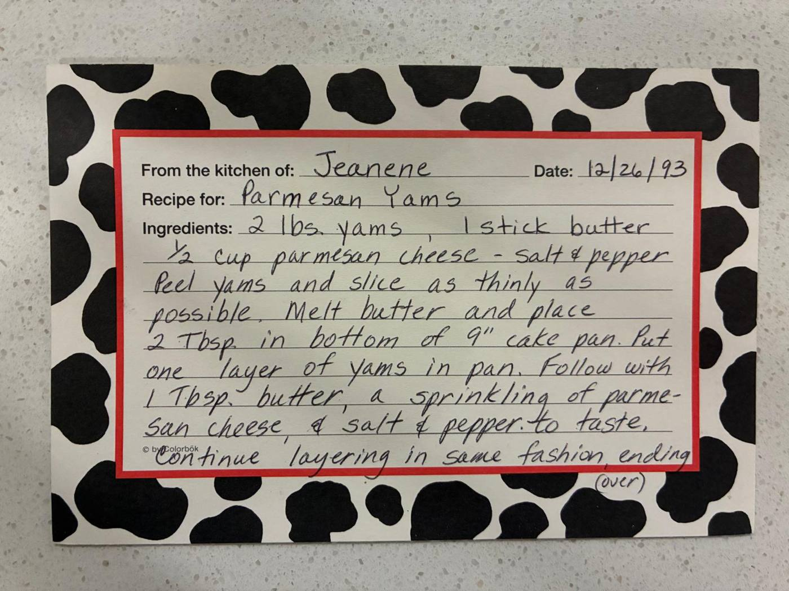
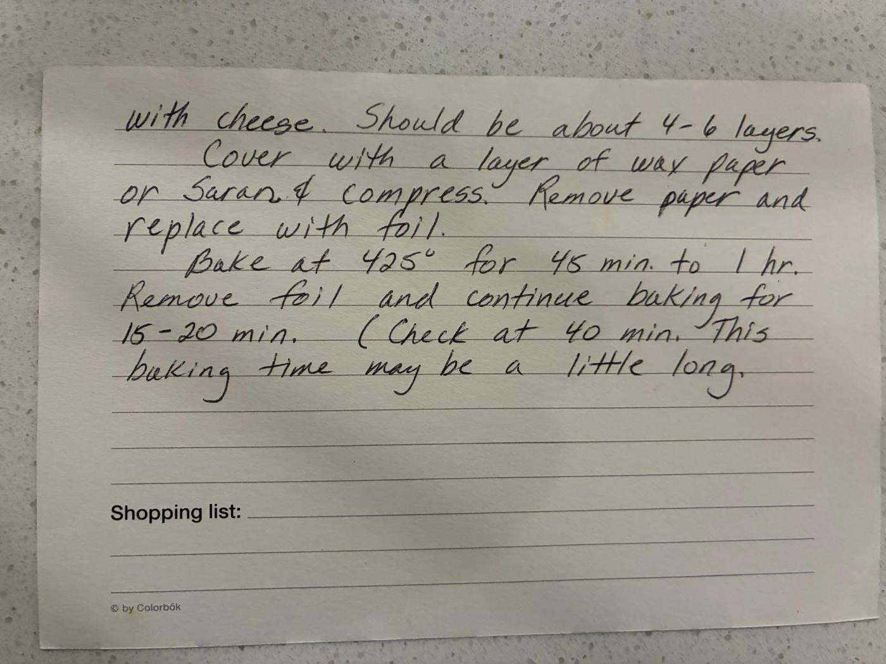

Breads & Sides
Parmesan Yams
From the kitchen of Mom
Oven425°F
Bake45–60 + 15–20 min
Pan9-inch cake pan


Mom's original card (front and back) · tap to enlarge
Ingredients
Method tap a step to mark it done
- Peel the yams and slice them as thinly as possible.
- Melt the butter and put 2 tbsp in the bottom of a 9-inch cake pan.
- Put one layer of yams in the pan. Follow with 1 tbsp butter, a sprinkling of Parmesan, and salt and pepper to taste.
- Continue layering the same way, ending with cheese. There should be about 4–6 layers.
- Cover with a layer of wax paper or Saran wrap and press down. Remove the paper and replace it with foil.
- Bake at 425°F for 45 minutes to 1 hour.
- Remove the foil and continue baking for 15–20 minutes.
Mom’s tips
- Check at 40 min. This baking time may be a little long.